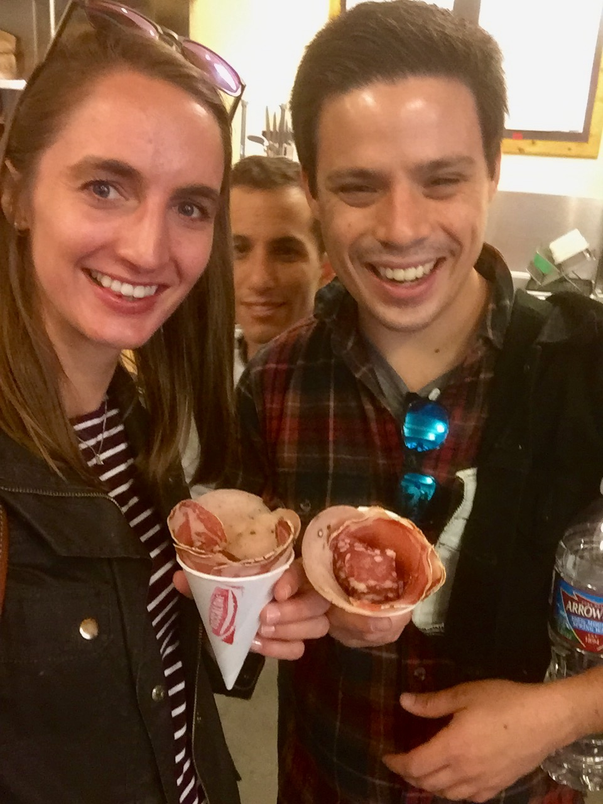
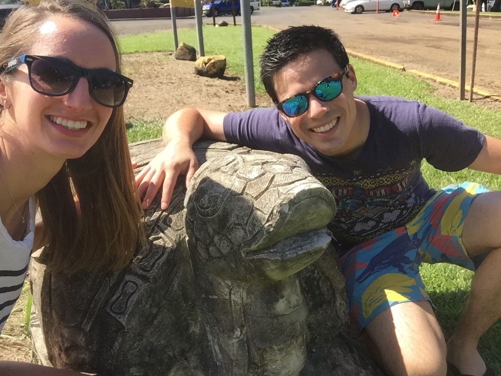
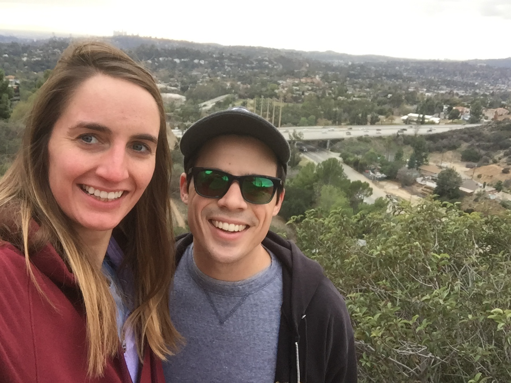
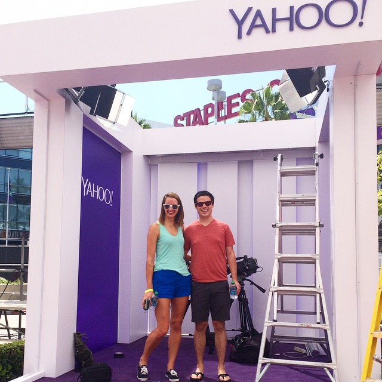
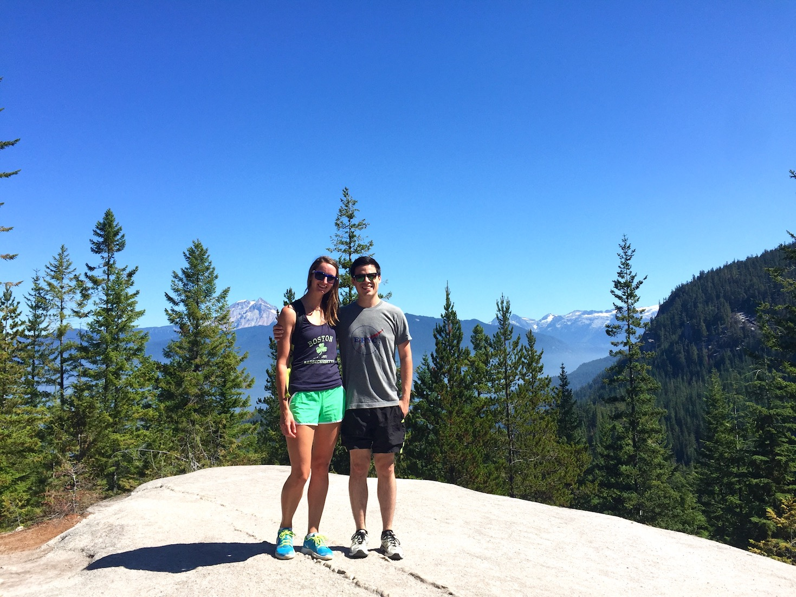
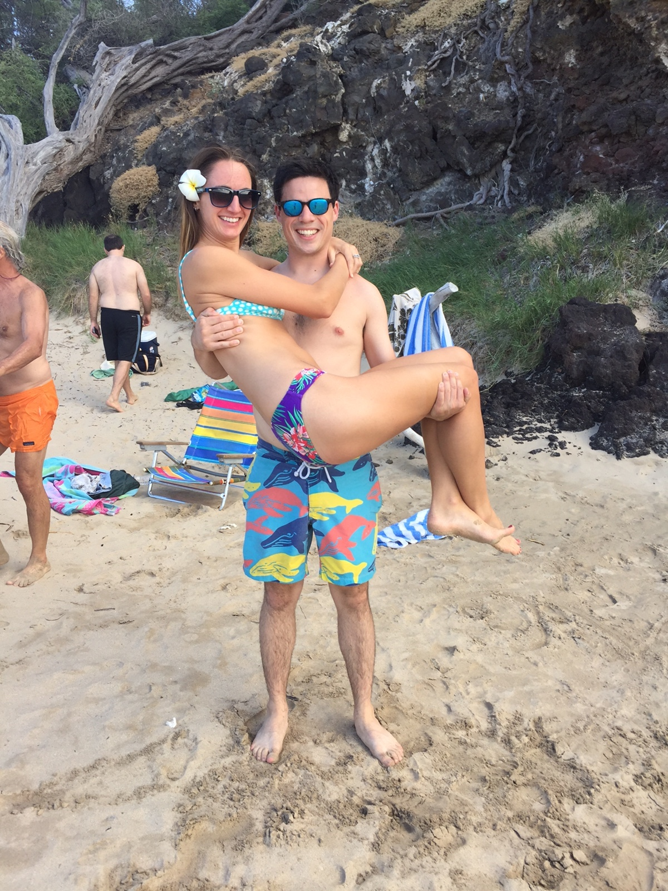
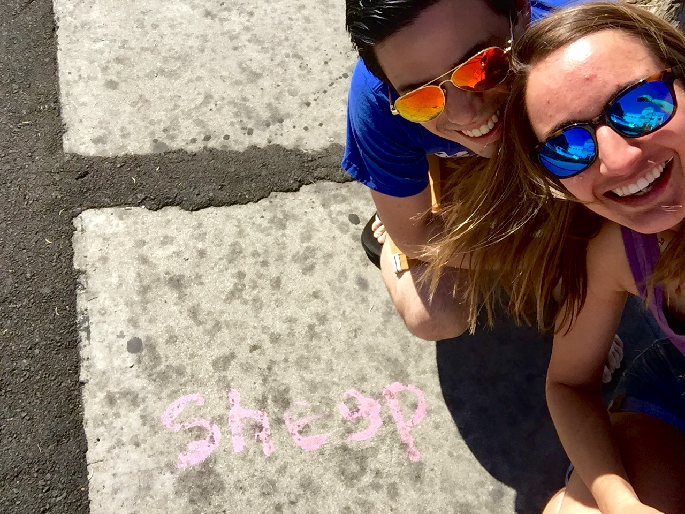
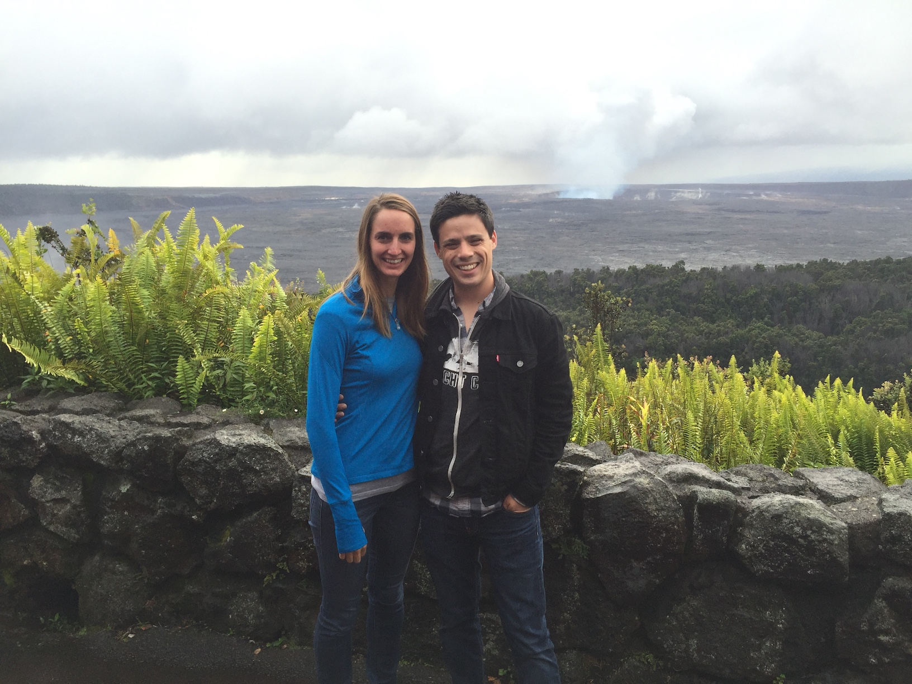
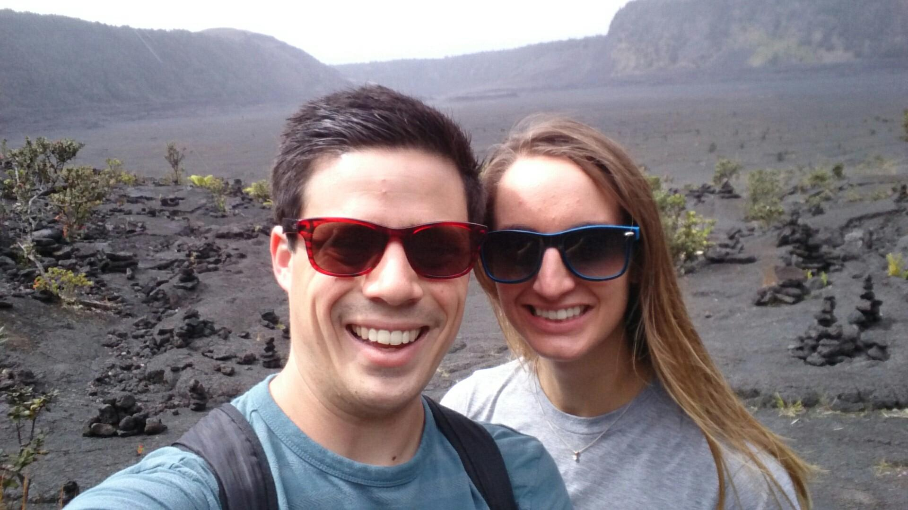
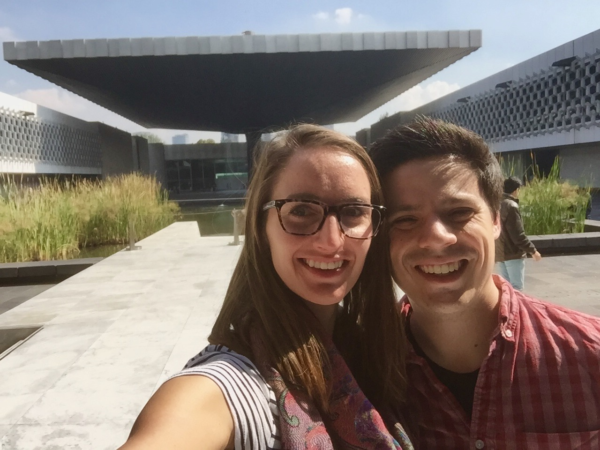

Know him, know her
Jacob
The master of hobbies, Jacob is currently enthralled with woodworking, and on a quest to fill their home with handmade furniture. Jacob is the mastermind behind all of their outtings to try a new taco joint and doesn't mind at all that Laura drags him to Yelp events and List Things. Also, he convinced Laura to get a dog last year (meet Melba!). He loves that his family pretty immediately adopted Laura into their holidays and weekend outings, even though it meant explaining endlessly what constitutes "The Valley."

Laura
The keeper of their calendar, Laura contends that without her Jacob would probably miss most family functions. She was over the moon when Jacob built her a rabbit hutch for her birthday two years ago (meet Chicken & Waffles!) and appreciates that whenever she deems it necessary to blast Taylor Swift in the house, Jacob only complains a little. She has loved bringing Jacob back to the east coast to show him what real cold is and that she's not crazy for calling it "a bubbler."
Know them together
Jacob and Laura met while working in the same department at Live Nation. They worked together for a year that brought with it office shenanigans, countless concert livestreams, a private plane ride over Los Angeles where they snuck on plane beers, a few late nights, and many desk moves. One desk move in particular put the two of their desks abutting so that they could each pop up from behind their computer monitor and see the other. Like prairie dogs.
Soon after the prairie dog arrangement, Jacob attended Laura's 25th birthday party and, after cake, some drinks, and a few Hawaiian flower temporary tattoos that Laura forced him to wear, he walked her home for the evening (slash early morning). The rest, as some would say, is history.
But some would be wrong, because it's way more than history. Jacob taught Laura that there's a difference between "less" and "fewer." Laura taught Jacob that not only is breakfast an important meal but it is one that cannot be missed. Jacob made sure their fridge always had myriad IPAs to choose from; and Laura showed Jacob that keeping their books organized by color could be neat. They learned together about bunny-rearing and puppy-raising and they failed jointly at growing quite a few plants and trees (sorry, fathers). Together they have embarked on many a DIY project that sometimes gets finished together, or sometimes gets finished by Jacob while Laura naps, reads, or cooks them dinner. They have traveled lots, listened to hours of podcasts on road trips, and made each other laugh every day.
They are very excited to celebrate with you all and see how the rest of their "history" plays out...










